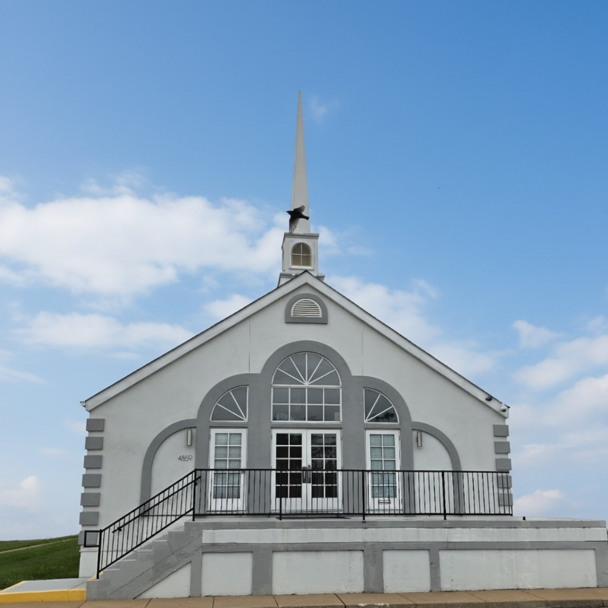

Come as you are. Experience the liberating Gospel of Jesus Christ with a family rooted in love, faith, and service. "Do Everything Out of Love."
Support the ministry securely - one-time or recurring giving.
Our prayer team lifts every request before the Lord.
Live on YouTube & Facebook every Sunday at 10 AM. Past sermons archived on YouTube.
Interested in joining our family? Learn about New Member Orientation.
What an honor to serve as the Pastor of this Glorious Church! Rev. Dr. Manson, Jr. accepted his call to ministry on April 28, 2002, preaching his first sermon on June 9, 2002 under the spiritual leadership of his father, Rev. Albert L. Manson, Sr.
He earned a Bachelor of Science in Christian Theological Seminary from St. Louis Christian College and a degree in Business Administration from Chattahoochee State College. He was ordained October 29, 2006 and has served our congregation with vision, love, and dedication.
Rev. Dr. Manson, Jr. is committed to honoring the historic traditions of Solomon Temple while engaging our community in a contemporary context - fostering intergenerational involvement and calling us all to "Do Everything Out of Love."
Read Our Full History
Our beautiful church home was built through faith, sacrifice, and over 100 years of dedication. On January 2, 2005, our congregation marched into this new sanctuary - a testament to God's faithfulness through every storm.
Every ministry is a vital part of the body of Christ. Find your place to serve, grow, and belong.
Solomon Temple Missionary Baptist Church was organized August 14, 1918 by the late Rev. R.N. Martin and Rev. Conway as Mt. Hebron Baptist Church. Through faith, perseverance, and the grace of God - "We are Still Standing."
Purchased our first church home & moved the congregation forward in faith
Kept his promise - the church would not die under his watch
42 years of faithful service - builder of our current home, mentor to many, called to Glory December 24, 2020
A glimpse into the life of Solomon Temple. Photos will be updated - placeholders shown below.
Your generous gifts make it possible to serve our congregation, support our community, and spread the liberating Gospel of Jesus Christ.
Give your tithes and offerings securely online. Every gift is an act of worship and a seed sown into the Kingdom.
Submit your request and our prayer team will lift you up before the Lord. You are not alone.
"Cast all your anxiety on Him because He cares for you."
- 1 Peter 5:7"Do not be anxious about anything, but in every situation, by prayer and petition, with thanksgiving, present your requests to God."
- Philippians 4:6"Is anyone among you in trouble? Let them pray. Is anyone happy? Let them sing songs of praise."
- James 5:13Our prayer warriors commit to lifting every request. This church family stands with you in faith.
For urgent needs, call the church directly: (314) 382-4181
We stream live to both YouTube and Facebook every Sunday at 10 AM - watch wherever is most convenient for you. Bible Study is every Wednesday at 7 PM via Zoom.
Watch our Sunday service live at 10 AM or catch any past sermon in our archive.
Watch on YouTubeWe also stream live to Facebook every Sunday at 10 AM. Replays available on our page.
Watch on FacebookStay up to date with everything happening at Solomon Temple. Our calendar is updated regularly by the church office.
We are so glad you are considering making Solomon Temple your church home. Here is everything you need to know about joining our family.
Welcome to Solomon Temple Missionary Baptist Church — A Caring and Sharing Church. We believe that every person is valued and that God has a purpose for your life. We are excited to walk alongside you on your faith journey and help you find your place in the body of Christ.
Join us any Sunday at 10:00 AM. You are welcome just as you are. No appointment needed.
Rev. Dr. Manson, Jr. and our leadership team would love to meet you and answer any questions you may have.
Attend our New Member Orientation class to learn about the church, our beliefs, and how to get involved in ministry.
Find your ministry, serve your community, and grow in your faith alongside our church family.
Solomon Temple Missionary Baptist Church is founded on the Word of God. These core beliefs guide our worship, our service, and our lives.
We believe the Holy Bible was written by men divinely inspired by God and is His perfect revelation to man. It is the supreme standard by which all human conduct and religious opinions should be measured.
There is one living and true God - eternal, all-powerful, and all-knowing. He reveals Himself as Father, Son, and Holy Spirit, three persons of one nature, essence, and being.
Salvation is offered freely to all who accept Jesus Christ as Lord and Savior. There is no salvation apart from personal faith in Jesus Christ - including regeneration, justification, sanctification, and glorification.
We are a Missionary Baptist Church committed to preaching the liberating Gospel of Jesus Christ, serving our community, and fostering the growth of every believer in faith and purpose.
Your questions, visits, and needs always matter to us. We'd love to connect with you.